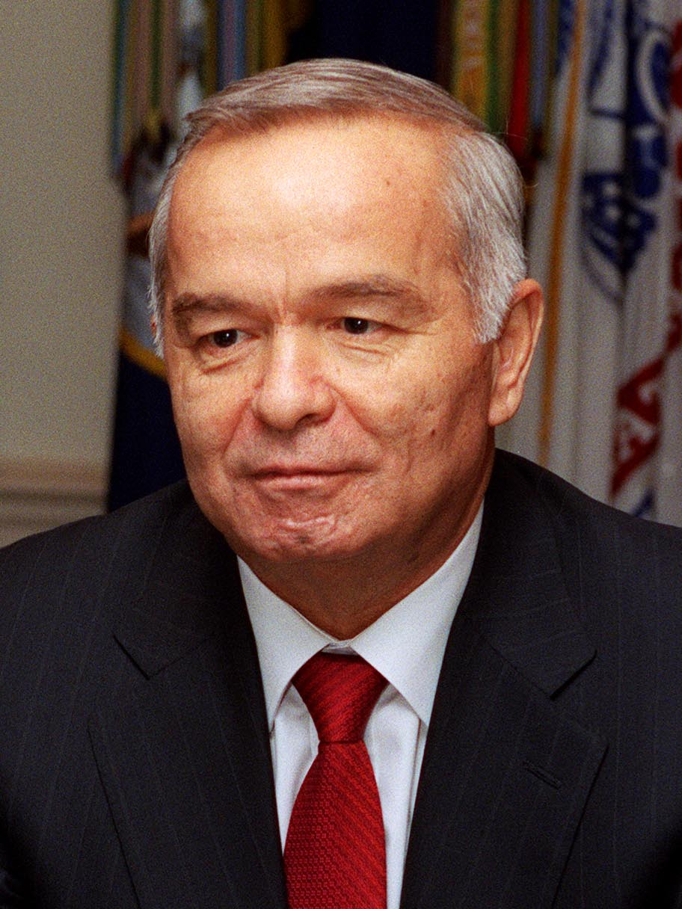

Присоединение Узбекистана к программе НАТО «Партнёрство ради мира» (1994) и ранняя внешняя политика
13 июля 1994 года Узбекистан подписал Рамочный документ НАТО «Партнёрство ради мира». Этот исторический справочник на основе источников объясняет суть программы, многовекторную внешнюю политику Узбекистана в первые годы и последующие этапы сотрудничества, с точными датами.

НАТО объявила о программе «Партнёрство ради мира» (Partnership for Peace, PfP) в январе 1994 года — на Брюссельском саммите (10–11 января), а Рамочный документ был выпущен 10 января 1994 года. Узбекистан подписал этот документ 13 июля 1994 года. Согласно официальному списку подписей НАТО, от имени Узбекистана его подписал министр иностранных дел Саидмухтар Саидкасымов. Из центральноазиатских соседей Туркменистан (10 мая), Казахстан (27 мая) и Киргизия (1 июня) подписали раньше; Узбекистан стал четвёртым. (Источник: НАТО — Signatures of the Partnership for Peace Framework Document; CVCE — Framework Document, 10.01.1994.)
Что такое «Партнёрство ради мира»?
PfP — это программа практического двустороннего сотрудничества между НАТО и отдельными странами-партнёрами; это не членство и не гарантия взаимной обороны. Программа сосредоточена на оборонной реформе, совместимости войск (interoperability) и совместных учениях (миротворческих, поисково-спасательных, гуманитарных). Каждая страна-партнёр сама определяет свой уровень участия через Индивидуальную программу партнёрства. (Источник: НАТО; CVCE — Framework Document.)
Внешняя политика Узбекистана в первые годы
Узбекистан провозгласил независимость 31 августа 1991 года; Ислам Каримов был избран президентом 29 декабря 1991 года. Страна вступила в ООН 2 марта 1992 года, в том же году установила дипломатические отношения с США (19 февраля), а посольство США в Ташкенте открылось 16 марта. Узбекистан стал государством-участником ОБСЕ (тогда СБСЕ) и, после независимости, членом СНГ. В первые годы внешняя политика Узбекистана строилась на балансе между Россией, Западом, Турцией и соседями — под лозунгами «независимости» (мустакиллик) и опоры на собственные силы. (Источник: НАТО; Wikipedia — US–Uzbekistan relations; Chatham House — Fazendeiro.)

Последующие этапы сотрудничества
В середине 1990-х сотрудничество приняло новые формы. Президенты Казахстана, Киргизии и Узбекистана 15 декабря 1995 года решили сформировать Центральноазиатский миротворческий батальон (CENTRASBAT); батальон был создан в 1995–1996 годах и проводил совместные учения с США/НАТО в 1997 и 1998 годах. 29 мая 1997 года НАТО создала Совет евроатлантического партнёрства (EAPC), членом которого стал Узбекистан. (Источник: NTI — EAPC; Silk Road Studies — CENTRASBAT.)
Доктрина оборонительной опоры на собственные силы
Внешнеполитическая доктрина Узбекистана подчёркивала суверенитет и военный нейтралитет. В августе 2012 года Олий Мажлис принял новую «Концепцию внешнеполитической деятельности»: согласно ей, на его территории не допускаются иностранные военные базы, страна не вступает в военные блоки и не направляет войска за рубеж. Именно поэтому отношения Узбекистана с НАТО всегда оставались в рамках партнёрства и не превратились в членство. (Источник: CACI Analyst — Uzbekistan's New Foreign Policy Concept, 2012; Eurasianet.)
Заключение
Подписание документа «Партнёрство ради мира» 13 июля 1994 года стало одним из первых официальных шагов независимого Узбекистана к практическому военно-политическому сотрудничеству с Западом. Но поскольку это было партнёрство, в котором каждая сторона сама определяет свой уровень, а не членство, Узбекистан удерживал его в рамках своей многовекторной внешней политики, опирающейся на военный нейтралитет.

Источники
- NATO — Signatures of the Partnership for Peace Framework Document
- CVCE — Framework Document issued by NATO on the Partnership for Peace (Brussels, 10 January 1994)
- NTI — Euro-Atlantic Partnership Council (EAPC)
- Wikipedia — United States–Uzbekistan relations
- CACI Analyst — Uzbekistan's New Foreign Policy Concept: No Base, No Blocs
- Chatham House (A. Fazendeiro) — Uzbekistan's defensive self-reliance: Karimov's foreign policy legacy